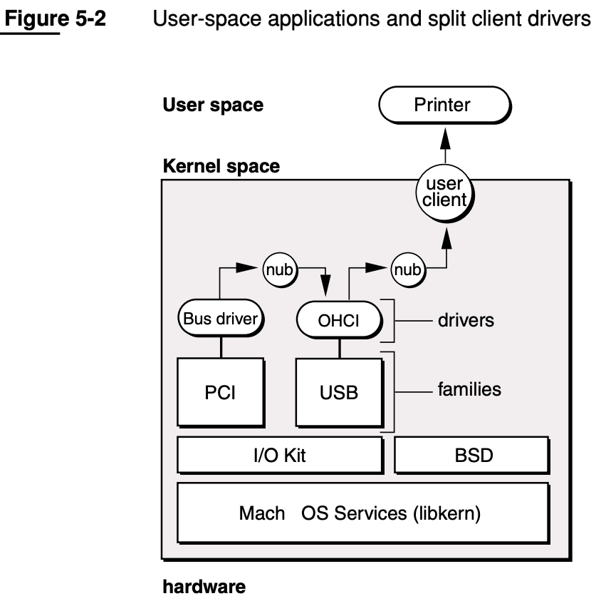

IOKit
IOKit=IoKit=IO Kit=I/O Kit- 发展历史
- 早期
DriverKit- 语言：
Objective-C
- 语言：
- 现在：
IOKit- 语言：
Embedded C++C++子集
- 语言：
- 早期
- 是什么：设备驱动框架
- 一个实现的面向对象的设备驱动API
- 凭借
libkern提供的底层支持，驱动程序可以使用C++实现。借助于C++的面向对象特性，外部在创建驱动程序时会节省很多成本。libkern- 一个内建的 C++ 库
- 用于支持 C++ 运行时
- 有了它内核的很多高级功能都可以使用 C++ 编写
- 一个内建的 C++ 库
- 凭借
- 一个实现的面向对象的设备驱动API
- 特点
- 多线程
- SMP安全
- 支持热拔插
- 自动动态设备配置
- 包括=组成
- 真正的即插即用
- 动态设备管理
- 动态（“按需”）加载驱动程序
- 桌面系统以及便携式电源管理
- 多处理器功能
- 架构
- I/O Architecture: Families, Drivers, and Nubs
- User-space applications and split client drivers
- 
- I/O Architecture: Families, Drivers, and Nubs
- 核心概念
- 发展历史